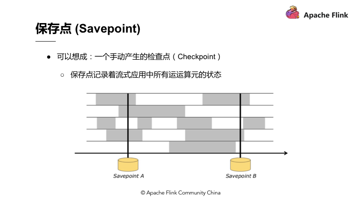

Ch09-Flink 之 Savepoint
December 31, 2020
Savepoint 跟 Checkpoint 的差别在于 Checkpoint 是 Flink 对于一个有状态应用在运行中利用分布式快照持续周期性的产生 Checkpoint，而 Savepoint 则是手动产生的 Checkpoint，Savepoint 记录着流式应用中所有运算元的状态。
当手动产生一个 Checkpoint 的时候，就叫做一个 Savepoint。

如图，Savepoint A 和 Savepoint B，无论是变更底层代码逻辑、修 bug 或是升级 Flink 版本，重新定义应用、计算的平行化程度等，最先需要做的事情就是产生 Savepoint。
Savepoint 产生的原理是在 Checkpoint barrier 流动到所有的 Pipeline 中手动插入从而产生分布式快照，这些分布式快照点即 Savepoint。Savepoint 可以放在任何位置保存，当完成变更时，可以直接从 Savepoint 恢复、执行。
从 Savepoint 的恢复执行需要注意，在变更应用的过程中时间在持续，如 Kafka 在持续收集资料，当从 Savepoint 恢复时，Savepoint 保存着 Checkpoint 产生的时间以及 Kafka 的相应位置，因此它需要恢复到最新的数据。无论是任何运算，Event – Time 都可以确保产生的结果完全一致。
假设恢复后的重新运算用 Process Event – Time，将 Windows 窗口设为 1 小时，重新运算能够在 10 分钟内将所有的运算结果都包含到单一的 Windows 中。而如果使用 Event – Time，则类似于做 Bucketing。在 Bucketing 的状况下，无论重新运算的数量多大，最终重新运算的时间以及 Windows 产生的结果都一定能保证完全一致。